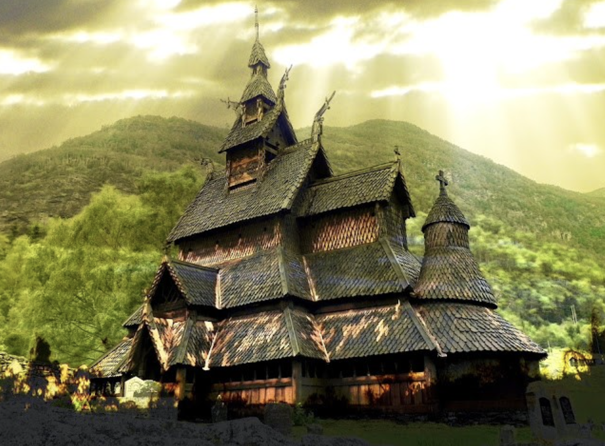
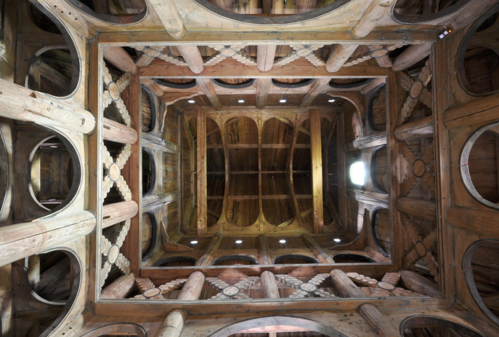
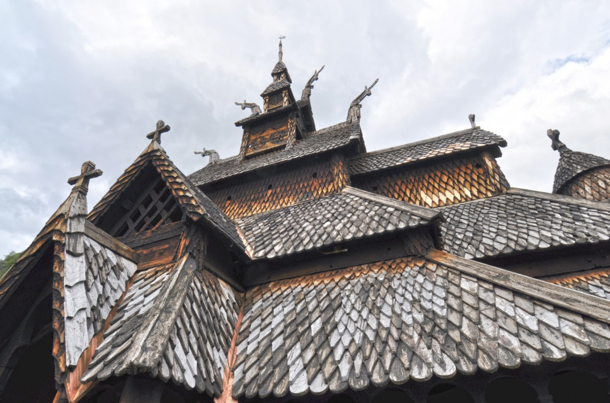
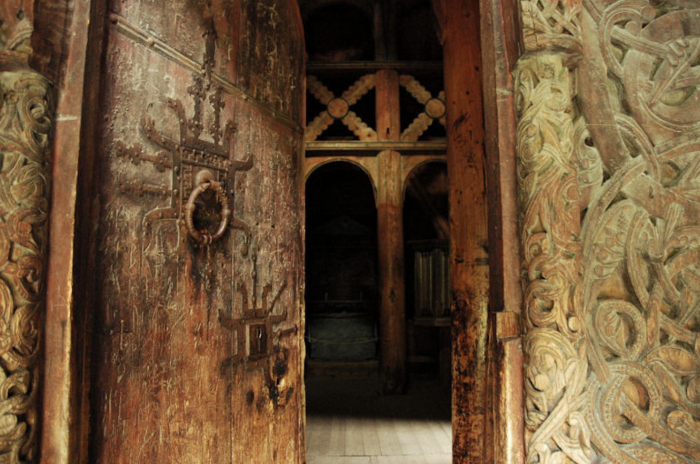

Iglesia Vikinga de Borgund
Presentación
En los últimos años el cine y las plataformas de streaming nos han invitado a viajar con la imaginación a tierras vikingas. Pensar en runas y dragones ya se encuentra en el inconsciente colectivo y realmente suena a imaginario aunque muchas veces la realidad supera a la ficción.
Para emprender el viaje nos trasladaremos a Noruega. Allí descubriremos una de las piezas de arquitectura que mejor representa la convivencia cristiana con la cultura vikinga. Cerca de los más bellos fiordos noruegos, es donde se impone la majestuosidad de la Iglesia de Borgund.
Ubicación
En la zona nórdica del planeta, hallamos el Reino de Noruega, es un Estado soberano de Europa septentrional. En su interior, ubicamos el pueblo de Laerdal, provincia de Sogn og Fjordane.
Fue en Laerdal donde en el siglo XII se inauguró la edificación del templo, dedicado al apóstol San Andrés. Actualmente funciona como museo y se puede llegar mediante vía aérea a través del aeropuerto Oslo-Gardermoen, a de 200 km, o del aeropuerto de Bergen-Flesland, a unos 180 km. Luego, desde cualquiera de los dos se llega en autobús.

La Iglesia
Construída en el año 1180 dedicado al apóstol San Andrés, en un valle rodeado de verde y frondosa vegetación y dentro del perímetro formado por un bajo muro de piedra que rodea al cementerio del pueblo, se alza la que está considerada como una de las mejores iglesias de madera de Noruega. Sin edificios a su alrededor que puedan hacerle sombra, su sola presencia ya la hace brillar tanto por su estructura de madera, como por su atípica ornamentación.
Lo primero que nos impacta es su belleza exterior: se observan las tres gradas en las que está subdividido su tejado, acabadas con tejas de madera de pino. Esta estructura arquitectónica se encuentra decorada y ornamentada con diferentes motivos entre los que destacan de forma predominante cuatro tallas de cabezas de dragón que actúan y asumen la funcionalidad protectora de sus congéneres de las proas de los drakars vikingos. A todo lo largo del edificio se mezclan diseños cristianos y vikingos. Un pequeño campanario se encuentra en lo más alto del tejado que cubre la nave central. Dentro, una campana medieval aguarda el momento del toque.
El resto de aguilones de los tejados inferiores son adornados con cruces cristianas, así como la culminación de la estructura circular que corona la torre sobre el ábside y que domina esta parte del templo. Una nave central domina su interior. Está rodeada por una galería que protege su interior de la climatología adversa que sufre el lugar en la mayor parte del año. Al acceder a ella, la nave central se nos muestra oscura y escasa de luz. Originalmente las ventanas eran pequeñas y simples aperturas circulares abiertas al muro exterior con la intención que el duro clima externo no se colara al interior. El espacio central es pequeño y se encuentra libre de bancos y decoraciones. El púlpito es del siglo XVI y el altar data de 1654.
Toda la estructura se apoya sobre doce soportales de madera colocados alrededor de la nave central. Ésta se encuentra bordeada por una cruz de San Andrés. Sobre este espacio se construye el techo formado por un intrincado marco usando numerosas vigas y viguetas, todo ello de maciza madera. Sólo el contemplar este entrelazado de madera ya te hace admirar su diseño arquitectónico.
Sobre la puerta oeste es visible un grabado de una batalla de dragones que se muestra como elemento ornamental decorativo. Además, en los soportales y marcos de las otras puertas aparecen inscripciones rúnicas.
Es la obra maestra de las 30 Stavkirke medievales que han sobrevivido hasta la actualidad. Presenta un diseño monumental, con su característico techo de escalonamiento séxtuplo con decoración en forma de cabezas de dragones. Es también la mejor conservada, la más conocida y una de las más visitadas.
Construcción
La materia prima más común para la construcción de las Stavkirke fue la madera de pino (Pinus sylvestris). Para la construcción del armazón se utilizaron pinos bastante crecidos, cuyos troncos tuvieran un diámetro lo suficientemente grande y con abundante duramen en su madera. El duramen se halla impregnado de resina de manera natural, evitando la infección por agentes biológicos.
Turismo
El Stavkirke de Borgund es propiedad de Fortidsminneforeningen (la Sociedad para la preservación de los antiguos monumentos noruegos). La Iglesia de Borgund es un centro turístico bastante visitado, un hecho que ha generado algunos problemas en su conservación. En 1973 se estableció un nuevo piso para proteger el original y se establecieron algunas restricciones para las visitas. Cuenta con un centro de visitantes con un pequeño antiquarium y algunos servicios turísticos. También hay algunos caminos antiguos que comienzan y llegan a la iglesia a través de Sverrestigen y Vindhella.
Clima
Gracias a las aguas templadas de la corriente del golfo, Noruega tiene un clima mucho más cálido y suave que otras partes del mundo con la misma latitud, como Alaska, Groenlandia o Siberia. En invierno, las zonas más frías suelen ser las del interior o las que se encuentran más al norte.
El territorio de Noruega se ubica entre los paralelos 57° y 78° latitud norte, por lo que el clima es bastante variado. Hay una gran diferencia entre el norte, el sur, el interior y la costa. Las zonas de costa tienen inviernos relativamente suaves y húmedos (pero con nieve en las montañas), mientras las regiones del interior tienen inviernos fríos con mucha nieve, y veranos cálidos y secos, sobre todo en el este del país. En esta zona, las temperaturas suelen rondar los 20 grados centígrados durante el verano. En la Noruega de los fiordos, el clima es bastante inestable. Que no te sorprenda si llueve, hace sol y nieva en el mismo día. Casi en cualquier época del año.
En primavera, los árboles frutales están en todo su esplendor. Durante el otoño, las hojas cambian de color y las laderas de las montañas se cubren de tonos dorados y cobrizos. El clima es de costa con un gran índice de precipitaciones, especialmente en las zonas más próximas al mar.
Influencia Vikinga
Antes de Cristo
Hablar de los vikingos es por lo general apelar a valores como la fortaleza, la resistencia física y las artes de la supervivencia por las armas, sin embargo la talla en madera es una seña de identidad de este pueblo, en especial las tallas que se hacían en la madera de los barcos. Hubo artistas que alcanzaron cierto renombre en esta técnica, con la que reflejaban la naturaleza y el entorno.
Después de Cristo
Éste es un lugar bello y paradigmático donde la tradición vikinga se ha sabido complementar con la cultura cristiana y donde el uso de la madera ha proporcionado mucho esplendor y riqueza a toda esta zona.
En un pequeño centro de interpretación aledaño hay una exposición donde se explica a base de paneles la historia de estas iglesias de madera y su papel social durante la edad media así como un conjunto de diferentes hallazgos arqueológicos vikingos.
Autores
- DATOS TUYOS
- DATOS MIOS